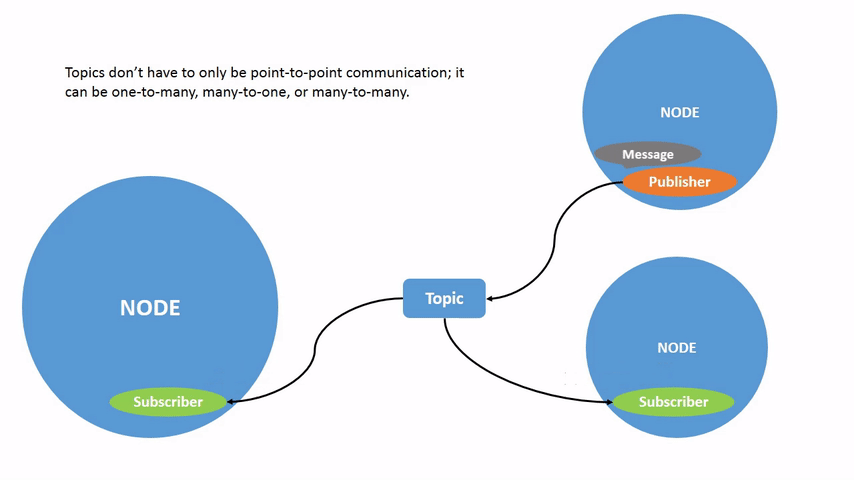

ROS2 concepts
The ROS2 graph or computation graph is the peer-to-peer network of ROS elements processing data together at one time. It encompasses all executables and the connections between them if you were to map them all out and visualize them.
Nodes
Nodes in ROS are responsible for each single module purpose. Nodes communicate data with one another through topics, services, actions or parameters.
A single executable (C++, Python…) can contain one or more nodes.

All nodes have a name that uniquely identifies them to the rest of the system.
Parameters
A parameter is a configuration state of a node/system. Parameters are dynamically reconfigurable and built off of ROS services.
Interfaces
ROS applications typically communicate through interfaces of one of three types: messages, services and actions. ROS2 uses a simplified description language, the interface definition language (IDL) to define interfaces.
Topics
Topics act as a bus for nodes to exchange messages. Communication via topics is N-to-N through a Publisher-Subscriber model:
Nodes sending messages are Publishers for that topic
Nodes receiving messages are Subscribers to that topic

Nodes need to know the type of the message to be able to understand the information. A topic type is defined by the message type published on it.
Services
Services are another method of communication for nodes. Services are based on a Request-Response model. Services only provide data when they are specifically called by a client.

Like topics, services have a type.
Actions
Another communication type intended for long-running tasks. Actions consist of:
goal
feedback
result
Actions are built on Topics and Services. They use a client-server model: an action client sends a goal to an action server that acknowledges the goal and returns a stream of feedback and a result.
Note
both the action server and the action client can stop a goal to be processed. When the server stops a goal it’s said to abort the goal.

Names
Graph Resource Name
Graph Resource Names provide a hierarchical naming structure that is used for all resources in a ROS graph.
Each resource is defined within a namespace, which it may share with other resources. In general, resources can:
create resources within their namespace
access resources within or above their own namespace.
Names are resolved relatively, so resources do not need to be aware of which namespace they are in.
There are 4 types of Graph Resource Names:
base (
basename)relative (
relative/name): default resolutionglobal (
/global/name)private (
~private/name)
Example:
Node |
Relative |
Global |
Private |
|---|---|---|---|
|
|
|
|
Note
any name within a ROS2 Node can be remapped when the Node is launched at the command-line.
Package resource name
Package Resource Names are used in ROS to simplify the process of referring to files and data types on disk. They are just the name of the package that the resource is in plus the name of the resource
Because of this, be careful and not produce different executables with the same name in the same package
Some of the ROS-related files that may be referred to using Package Resource Names include:
Message (msg) types
Service (srv) types
Actions (action) types